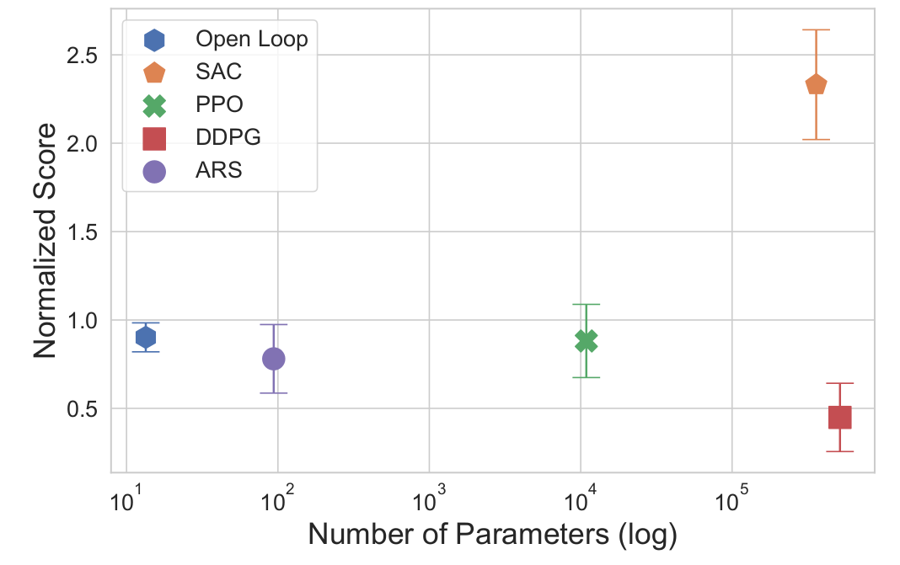
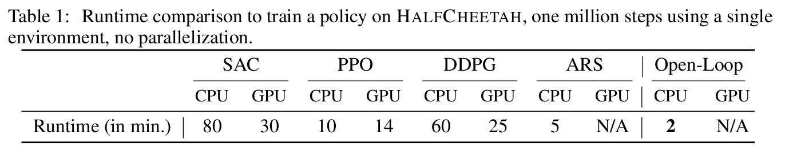
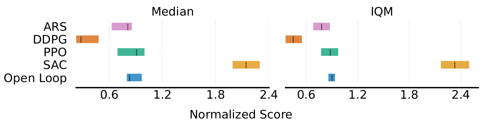
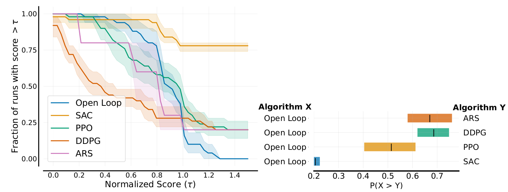
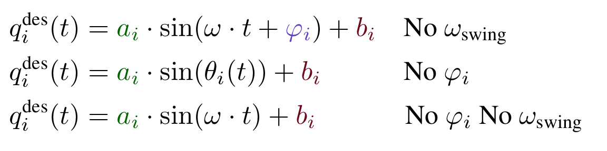
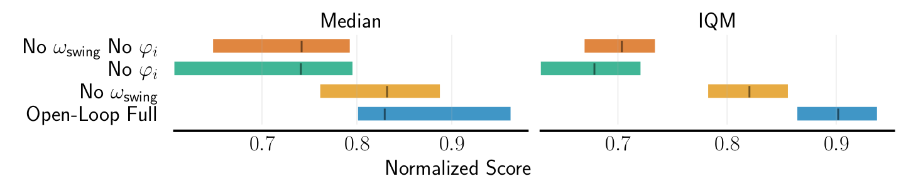
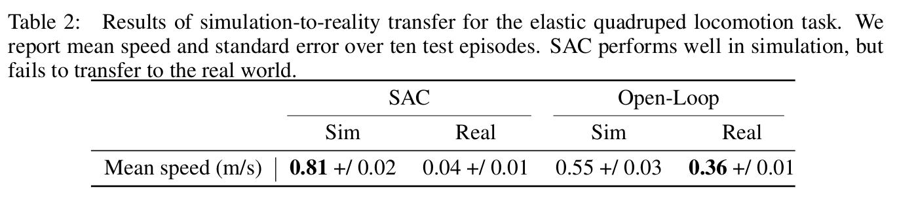

Motivation
- Current trend: increasingly complex algorithms
- SOTA RL struggle with seemingly simple problems
- Baseline for locomotion: periodic policy
Open-Loop Oscillators
\[\begin{aligned}
q^{\text{des}}_i(t) &= \textcolor{#006400}{a_i} \cdot \sin(\theta_i(t) + \textcolor{#5f3dc4}{\varphi_i}) + \textcolor{#6d071a}{b_i} \\
\dot{\theta_i}(t) &= \begin{cases}
\textcolor{#0b7285}{\omega_\text{swing}} &\text{if $\sin(\theta_i(t) + \textcolor{#5f3dc4}{\varphi_i})) > 0$}\\
\textcolor{#862e9c}{\omega_\text{stance}} &\text{otherwise.}
\end{cases}
\end{aligned} \]
One oscillator per joint and the frequency is shared between the joints
35 lines of code

Simulation Results
Parameter efficiency?

27000x fewer parameters than SAC
Runtime?

Real Robot Experiments

Sim2real transfer without randomization or reward engineering
Cost of generality vs prior knowledge
International Space Station Mission
Training directly on the robot in 30 minutes.
Additional Video
Conclusion
- Minimal prior knowledge
- DRL pitfalls
- Cost of generality
- Limitations
Questions?
Backup slides
35 lines of code
import gymnasium as gym
import numpy as np
from gymnasium.envs.mujoco.mujoco_env import MujocoEnv
# Env initialization
env = gym.make("Swimmer-v4", render_mode="human")
# Wrap to have reward statistics
env = gym.wrappers.RecordEpisodeStatistics(env)
mujoco_env = env.unwrapped
n_joints = 2
assert isinstance(mujoco_env, MujocoEnv)
# PD Controller gains
kp, kd = 10, 0.5
# Reset the environment
t, _ = 0.0, env.reset(seed=0)
# Oscillators parameters
omega = 2 * np.pi * 0.62 * np.ones(n_joints)
phase = 2 * np.pi * np.array([0.00, 0.95])
while True:
env.render()
# Open-Loop Control using oscillators
desired_qpos = np.sin(omega * t + phase)
# PD Control: convert to torque, desired qvel is zero
desired_torques = (
kp * (desired_qpos - mujoco_env.data.qpos[-n_joints:])
- kd * mujoco_env.data.qvel[-n_joints:]
)
desired_torques = np.clip(desired_torques, -1.0, 1.0) # clip to action bounds
_, reward, terminated, truncated, info = env.step(desired_torques)
t += mujoco_env.dt
if terminated or truncated:
print(f"Episode return: {float(info['episode']['r']):.2f}")
t, _ = 0.0, env.reset()
Performance?

on-par with PPO
Performance? (2/2)

Robustness to noise

Ablation Study
\[\begin{aligned}
q^{\text{des}}_i(t) &= \textcolor{#006400}{a_i} \cdot \sin(\theta_i(t) +
\textcolor{#5f3dc4}{\varphi_i}) + \textcolor{#6d071a}{b_i} \\
\dot{\theta_i}(t) &= \begin{cases}
\textcolor{#0b7285}{\omega_\text{swing}} &\text{if $\sin(\theta_i(t) +
\textcolor{#5f3dc4}{\varphi_i})) > 0$}\\
\textcolor{#862e9c}{\omega_\text{stance}} &\text{otherwise.}
\end{cases}
\end{aligned} \]


Results
